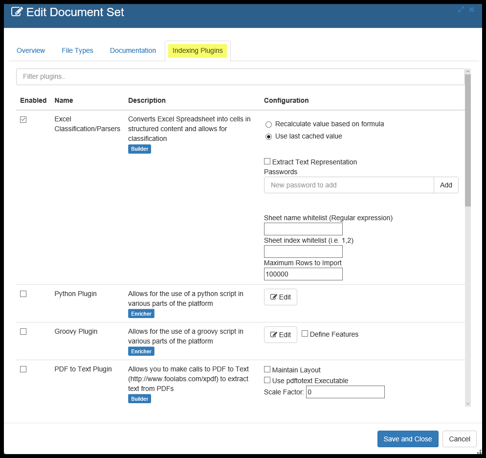
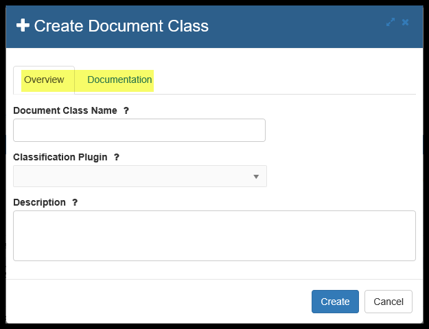
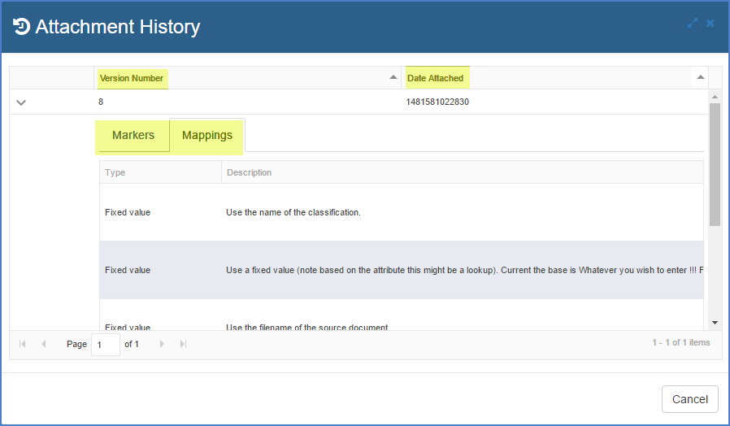

Document Sets and Document Classes
- Document Sets Component
- Document Classes
The overall project processes for extracting data is shown below.

This two sections of the manual focus on the documents that have already been imported and how to get data out of them.
Document Sets Component

Usage
Click on Explore or on Document Sets . This will take you to the main Grid, which lists all the Document Sets that were created when you Imported the contents of a File or Folder into your Workspace.
Note: As soon as a Document Set is Imported, it is automatically indexed, allowing for searching through all data in the Workplace as if it was one big data source. See Unified Search.
Document Sets Screens
Document Set Grid
Document Sets are groups of non-database files that you have brought into the Pendo Platform. This is where can you Edit, Delete, Reindex and Search thru any Document Set or Sets. These documents would typically be spreadsheets, PDF files, email, word processing documents, etc.
Edit Screens
Overview Tab
- You may edit the Document Set Name as desired.
- You may enter/edit descriptive information about the Document Set (e.g. where did the you get it, time span encompassed, how it will be used for your project, etc.)
- You can see (but not modify) the Source of this Document Set.
- Source give you the name of the Remote Source if that is where the Document Set came from.
File Types Tab
- This screen shows you what types of files are in the Document Set.
Documentation Tab
Enter any desired project internal documentation notes about this Document Set.
Indexing Plugins Tab

NOTE: When editing Document Sets, the Pendo Platform will ensure that at least one Plugin is a Document Builder so that Indexing will work.
- Here you can see and alter which Plugins are being used for the Document Set. Select only those Plugins that are relevant to type of file and the projects being worked on in your Workspace.
- Many Plugins have additional options. Some of these options are simply Yes/No while others may allow further interaction, such as entering in Keywords or creating scripts to extract targeted data out of a Document Set.
Delete
Allows you to Delete a Document Set from the Workspace.
Reindex Selected - One Document Set at a time
WARNING: Whenever you Reindex any Document Set that had a Document Class Attached, the status of the attachment will become 'Stale', indicating that until you to rerun the Attach process, the extraction is out of sync with the updated Document Set. Please rerun the Attach process for the Document Class. This will ensure that the previous data that had been extracted to a Target Entity will be removed and the updated data will replace it. The Document Class itself is fine, you just need to attach it again.
For the most part, you will need to Reindex when you are changing/modifying Plugins or when the data source has been updated.
If you highlight a Document Set and click Reindex Selected, you will see a popup screen.
Batch and Grid Sizing
When dealing with Document Sets the Batch Size is the number of files that will be brought into memory at one time. The ideal batch size depends on both the amount of memory in the server and the type and sizes of data with which you are dealing. The smaller the individual file sizes and the more memory your server has, the bigger the Batch Size can be.
The Grid Size determines the number of simultaneous threads that will be used to process the data. The ideal size will depend on the number of processors your server has and what else may be running on the server at the same time.
The Platform will look at your entries and validate them, learning more about each specific data set over time. You will also get notified about Grid and Batch sizes when you Attach A Document Class in order to extract the mapped data to the Target Entity.
If the entered numbers are too big, a maximum recommendation will be shown. You may overwrite the Platform recommendations, but be aware that this increases the chance that a Platform Worker the crash, requiring it to be restarted by your technical support team..
Reindex - Multiple Document Sets from a single screen
Clicking 'Reindex' brings up a popup screen showing all of the Document Sets in the Workspace.
Here, you may select one or more Document Sets you wish to be reindexed. There is also a filer box at the top of this screen, allowing you, for example, select only Document Sets that have the word 'excel' in the name.
Search
Clicking the Search button invokes the Unified Search and filters the Scope to search only within the specific Document Set. This can be very helpful when you:
- Don’t want to search through everything on the Pendo Platform.
- Want to see the results of a Document Class.
- You want to test scripts you are writing.
You may, of course, override this by clicking on the drop down arrow by the Scope box and selecting ‘All Sources’ or any combination of data sources in your Workspace.
Unified Search is very powerful. To help get the most out of your searches, please be sure to see Unified Search
Document Classes

What is the component used for?
The overall goal of this component is to extract information from unstructured data - creating structured information from otherwise difficult sources. An example would be taking millions of PDF documents, targeting certain data that you want consolidated and putting it into one or more tables.
The component is designed to:
- Analyze large numbers of files to determine which variation of a Document Class works for each file.
- Tweak the Class to be as inclusive of as much of the data in the Document Sets as possible.
- Easily identify outliers.
- Extract the desired data elements and put them into a Target Entity.
- Track the History of all changes made by Users that would affect the data being extracted, and create a file that has all the details of the Document Class setting each time data is extracted.
Assumptions
You will need one or more Target Entities that will become the aggregated repository of all the data you extract from the targeted Document Sets. You can do this in two ways: you can import or create these Target Entities as described in previous sections.
- Your technical support may have already imported an empty target database that has the Entities and Attributes that make sense for your project.
- You can make the Target Entity yourself by going into Entity->Create.
- You may modify these Entities and Attributes as needed during the course of your project.
You may or may not have a good understanding of contents the Document Sets which you are going to be using. That's ok as we can use the tools of Platform to help us understand what the trapped data actually is, how unlock it and extract if for your use.
Flexibility
Note the flexibility of the Platform to conform to your project needs. Everything has a 'many-to-many relationship'.
- You map to as many Target Entities as desired.
- Within any given Document Class, data may be mapped to more than one Target Entity. For example, you may wish to extract data from a group of Word documents into two or more Target Entities.
- You may use as many Document Sets for the data as desired.
- More than one Document Class can mapped to a the same Target Entity. For example, one Document Class looking at Word documents and another Document Class looking at Excel files may extract data into the same Target Entity for better aggregation.
General Concepts
The high level workflow in this component is:
Create.
Create a Document Class for a type of file (Excel, Text, etc.) and select from any of the Document Sets from which you wish to extract information.
Identify a group of files by using Markers.
Select a representative file to use as a template of the other files in a Document Set. Create and modify Markers that will be used to correctly target many files.
The UI allows you to interactively view the selected files (e.g. Excel© files) and test Markers, showing the number of hits/miss across the selected Document Sets.
Map the documents and test the proposed data extraction.
Using various methods, intelligently search and navigate through the document to select the data you desire to extract. See real-time results, allowing you to verify your mapping and understand any outliers.
Iterate until you are satisfied you have extracted as much data as desired with the quality you demand.
Extract your Data.
Run Attach to extract the data from all the eligible files in your selected datasets. Go to the Target _Entity to Search and Download the data.
Satisfy Auditors and Internal Compliance.
Document the Document Class on demand and automatically whenever an Attach is run. All modifications to any Document Class are stored in readily accessible History files.
Create a Document Class Tab
Setting up a Document Class is a two-step process: Create and then Edit. Click Create from the grid screen. When creating a Document Class, you will only see two tabs.

Enter the name of your new Document Class, select the desired Classification Plugin and type in any descriptive information you desire.
You may optionally go to the Documentation tab and enter any project internal documentation you wish.
Click Create at the bottom right. You will go back to the grid.
Edit a Document Class Tab
Highlight the Document Class and click Edit.
Overview and Documentation Tabs
These are exactly the same as when creating the Document Class.
Associated Data Sets Tab
Click on Associated Data Sets tab.
The Document Sets are shown in alphabetical order. Here you select from one or more of the Document Sets that contain the files that have the data you want to extract. The list of Document Sets will appear in alphabetical order. Note that:
- You may pick as many Document Sets as you wish.
- You may change the Document Sets you are using whenever you need to for your project.
- Be aware that if you change the Document Sets used for a Document Class, the Attachmnet State will be reset to "Stale", indicating that you must run the Attach again to extract all the desired information.
Documents Preview Tab
Click the Documents Preview tab
Select a file from one of your selected Document Sets that you will use as a template for Markers. Yoo may change this selection at any time.
Markers Tab
Above, you can see the we are using a RegEx to look at a specific worksheet and cell in all the excel files in the Document Sets that were selected. Further, the cell must have text that starts with either 'Jones' or 'Acme'.
Markers act as filters against all the files in the selected Docment Sets.
The goal of using Markers to correctly identify a group of files so that targeted data can be extracted. Remembering that the format/layout of your source files may have changed over time, more than one Marker may be needed to correctly identify files that belong to this class. However, with clever markers, usually only one Marker is needed. The UI allows you to visually see the data in its native form (without special formatting). This allows you to understand how your Markers are working, change the Markers as needed and see the Document Preview count update.
When you start a new Document Class that has no Markers the Document Preview tab indicates 100% hits since the is no filer in place.
Note: For details on the syntax available to you to create Markers, please see the appropriate article on Zendesk. Different selections will be available depending on the type of file with which you are working. For example, you may have Regular Expression available to you no matter what, but you would have also have Excel Fixed Value and General Query Marker for Excel, Text Fixed Value for PDF, etc.
To make a Marker:
- Highlight the cell of the spreadsheet on the right
On the left, select what type of expression to use in the Target Value box and click the + icon.
For help with Regular Expressions, please go to Regular Expression Reference Page. This is a very feature rich syntax. Please be sure to select Java as the flavor of RegEx.
In this example, we have elected to use a Regular Expression so as to make use of a wildcard in the Target Value.
- In the Reference field, you see the name of the Worksheet (Master) and the absolute value of the cell or range of cells.
- In the Target Value, you enter the allowed values that will be searched for in that Cell. In the first part of the example, you see that the word Jones is followed by a period and an asterisk, which is RegEx syntax for "anything starting with Jones". So Jones Report 1 or Jones Dealership would both be found. The second part of the Target Value is the pipe and then Acme followed by the period and asterisk. The pipe symbol (|) means OR. So the entire text means that any spreadsheet that has a worksheet called Master and has text that start with either Jones OR Acme would be included in this Document Class.
You may create as many Markers as needed to identify a group of similar files. Usually one Marker, even if it is complex, is sufficient. The trash can icon deletes that Marker.
NOTE as soon as a Marker is created, you will see the number of hits the system found is updated in the Documents Preview tab. This allows interactive feedback between the Markers you are creating and hits the PD3P will find. Clicking back to Documents Preview allows you to see which documents would be identified as a hit based on the current Markers.
This is an iterative process. Once you are happy with the Markers you have made and that the correct files will be targeted, proceed to the next step. You can always go back and modify the Marker as needed.
Preprocessors Tab
This feature is not yet available. This is a placeholder. The screen framework is there, but no options exist.
Mappings Tab
In this tab you are targeting data that you want to extract, optionally cleaning the data or manipulating it, and mapping it to your Target _Entity/Attribute. Note that, in general, the extracted data will be a string value as opposed to a numeric value. This allows the Pendo Platform to keep formatting i.e. a dollar sign. If you wish to reformat dates, extract actual numbers for any reason, including doing math as part of extracting using Expressions, you will need to use the correct Cleaner or modify it within an expression.
Mapping is very powerful and therefore has many options.
For details on Mapping syntax options, please see the appropriate articles for a specific file type on Zendesk.
There are several sections and options on this screen. Lets go over the core sections first:
CORE SCREEN SECTIONS
Section 1. You must select a Mapping Type. Depending on the type of file you are dealing with, the dropdown options allowing you to select a Mapping Type will differ.
Here is what you would see as options for MS Excel(c) files.
This is what you would see for Text based files such as PDFs that have been OCRed.
Here is what you would see for MS Word(c) files.
Section 2. Select to map either a Attribute or a Variable.
When you wish to directly extract data to your Target Attibute, select Attribute. You would then have a dropdown as part of your mapping to select the specific Target Entity/Attribute you wish to populate.
Mapping to Variables give additional flexibility in searching for and manipulating data. You can extract data from documents into temporary variables (using expressions) and then reference those variables in other mappings.
Both Attributes and Variables can be previewed.
How variables and attributes are different:
- Attributes are always associated with Target Entities whereas variables are not.
- Attribute values are stored in Target Entities whereas variables hold temporary values that are not permanently stored.
- Only variables can be referenced by other expressions in other mappings.
- When creating a given mapping, the mapping is either an attribute or variable name, but not both.
- Variables defined in mappings are available in scripts. Variables defined in scripts are available across other mappings.
- In scripts, variables are defined as follows:
- document.variables['myVar'] = "something"
- In subsequent groovy and python scripts or workbook expressions, the variable is accessible.
- In Groovy or Python, it is available like so:
- print(myVar)
- In workbook expressions, it is available like so
- #myVar
Section 3. Mapping Details Area This section is where all the pieces of information that are needed by a mapping are found. Different type of mappings have different field that need to be entered, so the screen will show you what is needed for each option.
SCREEN OPTIONS
- Preview / Data View toggle.
Clicking the Show Preview/Hide Preview button toggles between looking at the document you selected in the Document Preview screen and looking at the results of any mapping you have selected.
Showing a document preview
Showing selected mapping results.
- This allows you to preview Mapping results without changing tabs, saving time and clicks, helping you focus on specific mappings more efficiently.
- Any number of mapping can be selected via the Ctrl or Shift key in standard windows fashion. Use of the Command key for Macs is supported.
- Be sure to click the Load Data button to refresh data.
- Only the items selected will show in this area.
- The first column is a link which opens switches to a popup Detail View, the same as in a Document Set Search grid that shows data in rows rather than columns.
The second and third columns show the number of errors or warning that were processed. These columns are sortable in Document Classes. If there are Errors or Warnings, switching to the Detail View gives you access to the appropriate tabs.
Minimize all button.
Located above the topmost mapping, this allows users to minimize all mappings at once, making it easier to see all the tiles.Detach All/Attach all/Attach and the Enabled/Attach not enabled checkbox..
You have the ability to select/deselect any mapping from actually attaching and extracting data. This can help you with intermediate attachments as you are working thru various Mapping challenges. You can enable and disable variables and attributes for classification attachment via a checkbox on each mapping on the right side of each mappings title bar.
The default behavior is to enable attachment of each Mapping upon its creation. You must uncheck the box to disable attachment. You may toggle this as often as you wish. The ‘enabled’ and ‘disabled’ checkbox will not impact the in-tab preview of selected attributes and variables. There is also a ‘Enable All/Disable’ all button above the topmost Mapping.
- Re-Ordering Mappings.
The user will need to manage variable-attribute dependencies and making sure that any variable dependencies that are required by selected attributes are selected and in the correct sequence.
MISC Mapping Notes:
- If you wish to extract the data that was used as a Marker, you will need to map it here as well as keeping it as a Marker.
- You may map to several different Entities in the same Document Class.
- The same data may be extracted multiple times by mapping to different Entity/Attribute selections.
- Different Mapping options will become available over time. These options will vary also vary based on the kind of data being mapped (e.g. spreadsheets, PDF, word processing documents, emails, etc.).
- If you accidently enter an invalid expression, you will see the exception message inside of the cell in the Mapping Results Preview tab. This aids in debugging an expression.
When you have made many mappings, it may be useful to search for a specific mapping you made. There is a filter box, which is blank by default. Put in a string (the filter is not case sensitive) and you will see only those mapping that have that phrase. Spaces are allowed to be part of the filter, as seen below:

Special Note on Text Mappings
A text file can present many challenges, among them is the fact that there is no structure other than line nodes, making navigation more difficult. To aid in this, when using a Mapping Type=Regular Expression, you are presented with Filter Expression, Matcher Expression and Cleaner fields.
- The Filter Expression allows you to narrow down to a specific line using a Regular Expression.
- The Matcher Expression lets you work with the data that results form the Filter Expression and pull a particular value from that line using another Regular _Expression.
- The Cleaner works the same way in all Mappings.
Attachment Preview Tab
The last step of testing a Document Class is to be sure the Mapping you just did is correct. Click the Mapping Results Preview tab. There are a few sections on this tab. This is where you will see what the Target Entity/Attributes will look like if you Save the Document Class and run an Attach.
There are also two major viewing options on this page.
Viewing more data:
By default, only the first 20 hits are previewed and the data is displayed automatically. However, the number of records requested on Attachment Preview tab is adjustable via a slider bar. Each time you start to Edit a Document Class, the default remains 20 rows of data being retrieved from the server. You can increase this as needed, helping you debug and verify mapping logic by allowing more data to be visualized quickly. If you want to see more data, use the slide bar. The number of records selected will stay persistent during the entire Edit session. Since this number can be quite large, the 'Auto Reload' checkbox is deselected when the slider is changed. This makes it clear that the user must manually reload the data. This will prevent unexpected/undesired delays when switching between tabs.
Mapping Errors:
There are two basic types of mapping errors.
- If you make a mistake that does not result in a processing error, you will not be extracting your desired data.
- If you make a mistake that results in a processing error, you may get either a Warning or an Error. Above we show and Error. (The column with the yellow triangle is the Warning column). This is easily seen in the Mapping tab when Previewing data or Attachment Preview tab. As you can see above, the Error column was populated, in this case indicating 2 issues, and the desired attribute or variable will show as blank.
Mapping History Details
Whenever a User makes a change to a Document Class Name, Marker or Mapping and clicks Save or Save and Close, a new Mapping History number is generated and the change is noted in the History log.
Note that the Mapping History log will provide a view of the current state of changed items such as the version numbers (most recent up top), the Date of the Change and who changed it are provided.
Clicking the chevron will show additional details including:
Change Type: e.g. Class Name, Mapping or Marker, Action Type (such as Add, Remove, Update), Attribute Name, Description and Cleaners used, etc. For example, use the fixed cell reference Retail!I3 and clean the value to a decimal.
Delete a Document Class
This will delete the selected Document Class.
Duplicate a Document Class
This will duplicate the selected Document Class. This is very useful when you already have a Class with many Mappings or very complex expressions and you need relatively minor tweaking for a new Document Class. Basically, this is a way to leverage your existing work. The duplicate will have the same name with 'Copy of ' added to the beginning of the name. You may then Edit and rename.
Attach or Attach Selected - Extracting the data
The attach process is where the actual work of applying all the mapping of a Document Class to all the selected Document Sets and extracting the data to the Target Entity takes place.
By selecting Attach Selected, you will get a popup asking you to verify the Batch Size and the Grid Size for processing the documents. If you select Attach, the popup also allows multiple Document Sets to be attached.
Batch and Grid Sizing
For Attaching a Class, the Batch Size is the number of files brought into memory at one time and Grid Size is the number of simultaneous threads to be used by the server processors.
The Platform will look at your entries and validate them, learning about any given Document Class over time. If the numbers are too big, a maximum recommendation will be shown. You may overwrite the Platform recommendations, which will increase the chance that the server will crash. If this happens, you will just need to ask you support staff to restart and then just adjust the numbers down a bit.
Looking at the extracted data
From your Workspace home page, click on Entities. Select the Entity you imported as a Target and Click Search. You will see a snapshot of all the data that has been extracted from all the spreadsheets as of that time.
Now that you are looking at a Search grid, you can move columns around, sort and filter as well as download the information into an Excel© spreadsheet. The spreadsheet will have column headers based on the Attribute Name of your target Entity.
Technical Note: Please note that the Attach Class process does not actually populate the extracted data into the targeted Entities/Attributes. The structure of the Entities/Attributes is placed into the Pendo Platforms' index. Much more information other than the targeted data is stored in the Index. Currently, you can export the data from the index into Excel on demand by using the Entity ->Search feature and then exporting.
Attach Class History
Whenever you run an Attach Class, a snaphot of the entire Document Class is stored in the system. This can assist you in identifying all aspects of how the data was extracted and/or modified in the Platform. In other words, this provide a data lineage from the source documents to the extracted data point.
Just highlight any Document Class on the main grid and then click the Attach History button to see the all the setting in the Class that were in place each time the process was run.

Documentation
You may wish to see all the details of a Document Class. Highlight the Document Class in question and click on the Documentation button. This will create a PDF that you can download. It will contain information on the Data Sets, Markers and Mapping used. Example of Classification Documentation: